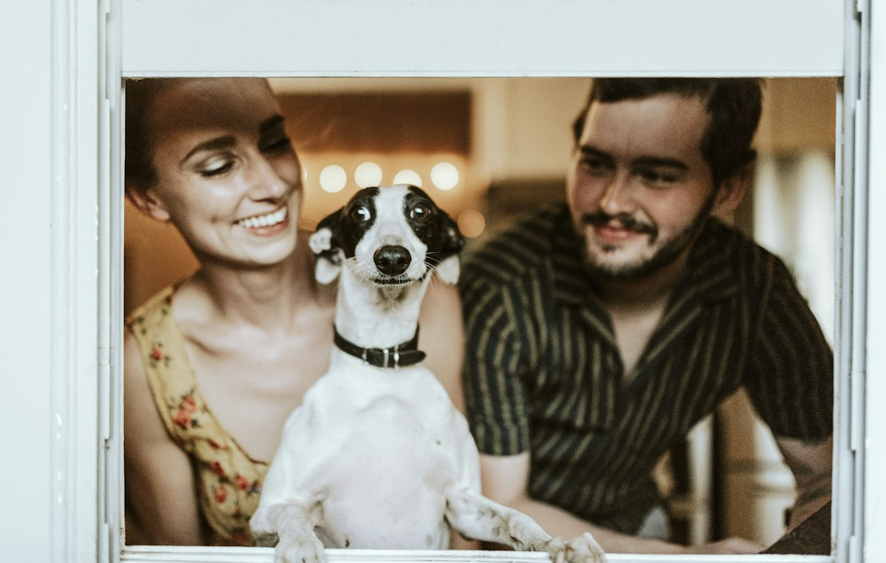
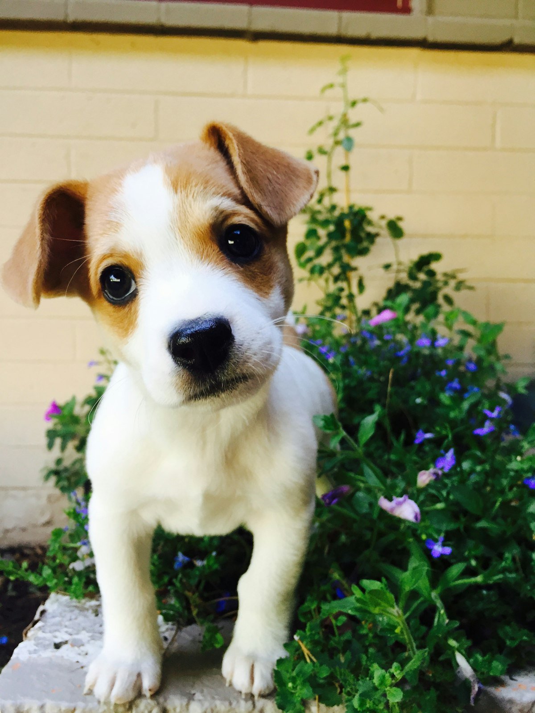
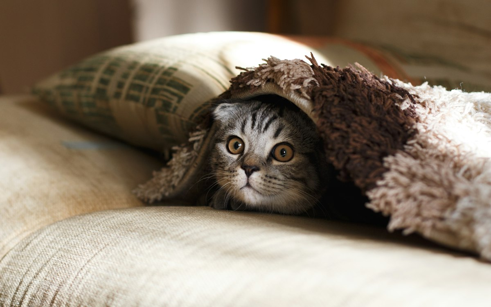
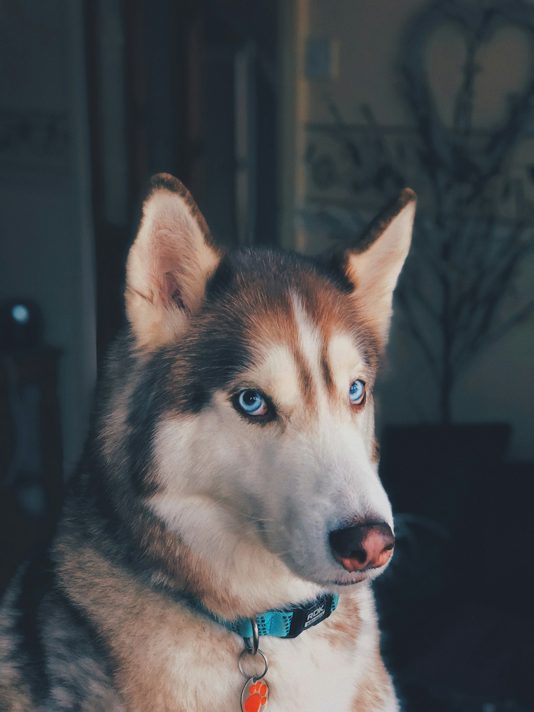
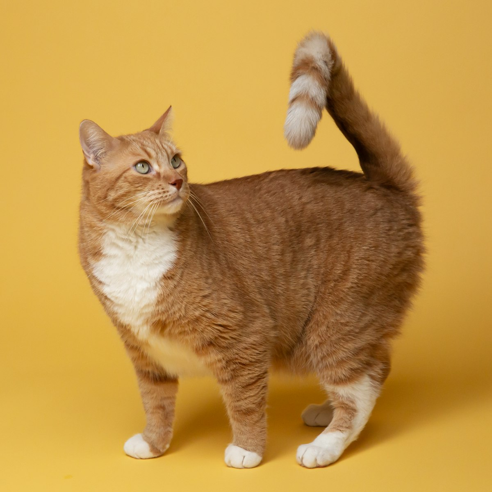

Vacunas, cirugías, laboratorio y estética canina en San Pablo, Chimalhuacán. Abierto todos los días.
📞 Llamar 55 2916 2729💬 WhatsAppRevisión completa y diagnóstico.
Esquemas para cachorros, gatitos y adultos.
Procedimientos con anestesia segura.
Análisis y limpieza dental.
Análisis clínicos y estudios.
Baño y corte para perros y gatos.
En Nalubeth ofrecemos servicios médicos veterinarios completos: vacunas, desparasitaciones, tratamientos, cirugías, esterilización, profilaxis, laboratorio y estética canina, además de venta de accesorios.




★★★★★“Esterilizaron a mi perrita y todo salió perfecto, muy atentos en la recuperación.”
— Clienta
★★★★★“Buen diagnóstico y precios accesibles. La estética quedó muy bien.”
— Cliente
★★★★★“Siempre explican todo con paciencia. Mis mascotas se atienden aquí desde hace años.”
— Clienta
Lunes a sábado de 10:30 a 19:00 y domingo de 11:00 a 16:00.
Sí, realizamos esterilización y otras cirugías; agenda una valoración previa.
Sí, hacemos estudios de laboratorio para un diagnóstico más preciso.
Entre semana por la mañana; las tardes de martes y sábado suelen estar más llenas.
Sí, encuentras collares, juguetes y accesorios para tu mascota.
📍 C. Violeta 4, Mz. 1, San Pablo, 56334 Chimalhuacán, Méx.
📞 55 2916 2729
🕙 L-S 10:30–19:00 · D 11:00–16:00